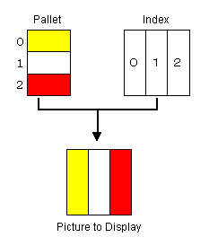
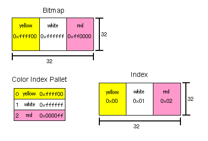

First, you need to prepare the image. You can choose from a variety of image formats for texture mapping. The three main formats are bitmap (RGBA), index color, and intensity.
The bitmap format places the four elements RGBA at each texel. R is for red; G is for green; B is for blue; and A is for alpha value which indicates the level of opacity (and therefore transparency). If all the texels are at full opacity (that is, none of them are translucent), the bitmap format may use just the RGB elements.
The index color format uses the TLUT (Texture Look-Up Table) and index texel data. This method loads several colors on a color pallet, and then specifies the pallet number of the texel by the index.

This format generally requires less data than does the bitmap format.
For example, let's compare the amount of data required by a bitmap picture that expresses 1 texel by using 4 bytes to hold the RGBA value (R: 8-bits, G: 8-bits, B: 8-bits, A:8-bits) with the amount of data required by an index color picture that expresses 1 texel by using 1 byte to hold the index (256 indexes) plus another 4 bytes to hold the color pallet (R: 8bit, G: 8bit, B: 8-bit, A: 8-bit). Both pictures are the same size (32x32 texels).
The bitmap picture needs 4 bytes for every texel, so it needs 32 x 32 x 4 bytes for a total of 4096 bytes.
The index color picture's index needs 1 byte for every texel, so it needs 32 x 32 x 1 bytes for a total of 1024 bytes for the index data. Add to that the space it needs to hold the index pallet, which is 256 X 4 bytes for a total of 1024 bytes to hold the pallet data. Add the two together and the index color picture requires only 1024 + 1024 bytes for a total of 2048 bytes.
As you can see, the index color format can represent the same picture using fewer bytes.

However, you need to be careful because the color pallet in the index color format is limited. Because the maximum pallet number is 256, the number of colors is limited to 256. Therefore, if you have a large complex picture that requires more than 256 colors, you need to use the bitmap format if quality is important.
You can use the following N64 functions to load the TLUT values:
N64 has a format called intensity to express brightness. It is sometimes used as IA (Intensity Alpha) by combining intensity and alpha. Intensity holds information about brightness only; it has no color information. It can specify a color by using the color combiner, but this is like setting the color to the texture of the gray scale. So, it seems to be the gray scale of red or blue. In practical application, it is used to show smoke or a flame. The biggest distinctive feature of the Intensity format is its compact data size.
Nintendo® Confidential
Copyright © 1999
Nintendo of America Inc. All Rights Reserved
Nintendo and N64 are registered trademarks of Nintendo
Last Updated March, 1999